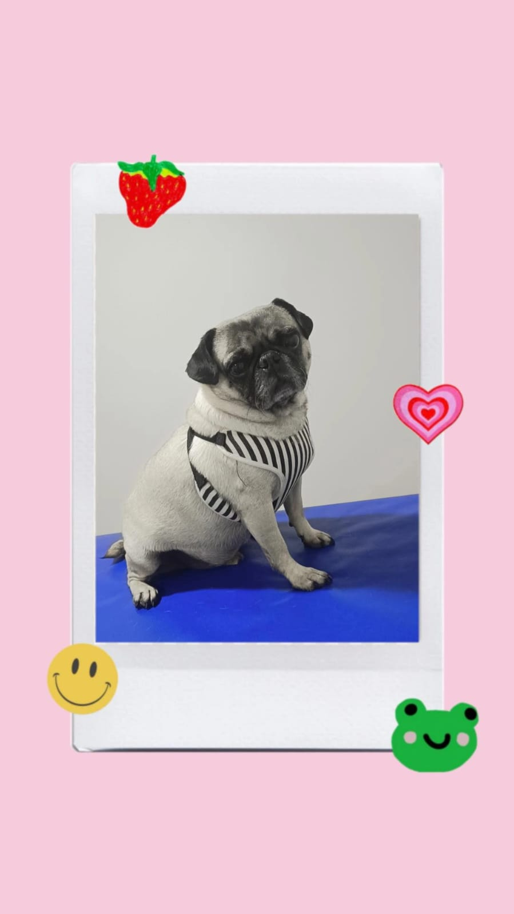

🧼
Limpieza de Arrugas
Sus pliegues faciales son adorables, pero acumulan humedad. Límpialos suavemente cada dos días con una toallita húmeda sin alcohol y sécalos muy bien.
Descubre la fascinante historia imperial, los secretos de cuidado y la dulce personalidad de los perritos más carismáticos del mundo.

De los palacios imperiales de Asia hasta convertirse en los reyes del sofá.
Nacieron en China durante la dinastía Han. Vivían rodeados de lujos en palacios imperiales, custodiados por soldados y valorados por las arrugas de su frente, que asemejaban el carácter chino de "Príncipe".
La respuesta es no, los pugs no nacen enfermos ni son propensos a enfermedades graves. Su salud depende de la genetica, la alimetacion, el ejercicio y los cuidados que reciba.
Comerciantes holandeses los llevaron a Europa. Un pug llamado Pompey se volvió leyenda al salvar la vida del Príncipe Guillermo de Orange tras ladrar y alertarlo de un ataque nocturno.
La Reina Victoria se enamoró profundamente de la raza, criando decenas de ejemplares y estableciendo los estándares modernos que hoy conocemos en todo el mundo.
Hoy en día son la compañía perfecta para hogares amorosos, famosos por su cola enroscada, su carita expresiva y su lealtad inquebrantable.
Todo lo que tu pug necesita para vivir feliz, sano y lleno de energía.
Sus pliegues faciales son adorables, pero acumulan humedad. Límpialos suavemente cada dos días con una toallita húmeda sin alcohol y sécalos muy bien.
Al ser braquicéfalos (hocico chato), son sensibles a las altas temperaturas. Sácales a pasear temprano por la mañana o al caer la tarde con agua fresca.
Al tener la piel delicada, evita baños frecuentes al menos que te lo recete un veterinario especializado, ya que en algunos casos hay jabones que le pueden hacer o muy bien o muy mal.
Tienen un apetito infinito y tendencia al sobrepeso. Mide sus porciones diarias y elige croquetas pequeñas diseñadas para razas mini o braquicéfalas.
Usa siempre pechera o arnés acolchado para proteger su tráquea y evitar presión en su cuello y ojos durante los paseos diarios.
Los huesos pueden romperse y causar obstrucciones o lesiones en el sistema digestivo de los pugs. Opta por juguetes seguros y alimentos diseñados para su raza.
Las almohadillas de los pugs pueden herirse fácilmente al caminar sobre superficies duras. Protege sus patas con zapatos para perros o usa una crema hidratante específica.
Su naricita es muy sensible y puede sufrir irritaciones o heridas fácilmente. Mantén la zona limpia y seca, y evita el contacto con sustancias químicas o productos irritantes, tambien puedes aplicar tantita vacelina en las noches.
Un resumen 100% científico de su encantadora forma de ser.